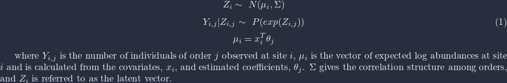
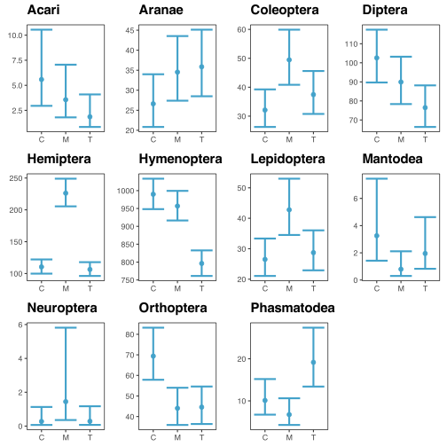

Multivariate analyses for UHURU Invert data
Table of Contents
0. Prereqs
Load packages and plot utility script.
require(VGAM) ## for fitting multivariate glms require(ggplot2) ## for plotting require(cowplot) ## for combining the plots source("plot_utility.R") ## my personalized plotting theme and functions
1. Abundance
1.1 Modeling approach
Let’s start with the abundance data. The basic idea here is to fit a model which takes into account a possible correlation structure among the responses (order abundance) in order to avoid the typical pitfalls of multiple testing (i.e. fucked type 1 error rates). Because the responses are counts, we should also use some type of Poisson GLM. A nice way to accomplish both these things is to fit a Multivariate Poisson LogNormal Model. The multivariate Poisson LogNormal model is given by the following:

We can fit this class of models using the VGAM package in R. We are interested primarily in the effect of treatment on order abundance, though also need to control for the experimental design. There are several ways to do this, but the easiest is probably to estimate a fixed effect for each unique replicate (6 in total). This gives us two covariates: Treatment (’C’, ’M’, or ’T’) and Replicate (’1N’, ’2N’, ’3N’, ’1S’, ’2S’, ’3S’), which we will model using an interaction between Block and Replicate – thus giving us three covariates.
1.2 Loading the data
Now we can load in some data and get it into a nice format:
## load data uhurua <- read.csv("UHURU_summary_metadata_abundance.csv", row.names = 1, header = TRUE) ## remove "abundance" from the column names removeWords <- function(str, stopwords) { x <- unlist(strsplit(str, "_")) paste(x[!x %in% stopwords], collapse = " ") } colnames(uhurua) <- apply(X = matrix(colnames(uhurua)), MARGIN = 1, FUN = removeWords, stopwords = "abundance") ## inspect data uhurua[,16:31]
Acari Aranae Blattodea Coleoptera Diptera Gatropoda Hemiptera Hymenoptera
N1C 4 28 0 21 128 0 115 1319
N1M 3 35 0 59 61 0 181 486
N1T 4 34 2 39 80 1 147 938
N2C 4 23 0 96 93 0 204 2830
N2M 6 27 1 59 113 0 320 2813
N2T 0 13 0 46 66 0 108 1828
N3C 3 30 0 41 32 0 337 629
N3M 4 43 0 81 107 0 453 845
N3T 1 42 0 28 40 0 126 1028
S1C 5 10 0 56 101 1 482 378
S1M 3 15 0 100 119 0 1248 258
S1T 1 36 0 88 131 0 231 254
S2C 16 17 0 88 226 0 430 349
S2M 7 36 0 176 126 0 1595 425
S2T 3 27 0 117 70 2 236 351
S3C 4 33 0 64 68 1 475 173
S3M 0 27 0 89 42 1 388 662
S3T 3 38 0 109 96 0 1122 168
Isopoda Lepidoptera Mantodea Neuroptera Orthoptera Phasmatodea Psocoptera
N1C 0 29 5 0 47 7 0
N1M 0 35 1 2 56 6 0
N1T 0 34 0 0 55 23 0
N2C 0 67 0 0 35 7 0
N2M 0 42 0 13 29 8 0
N2T 0 47 0 0 35 22 7
N3C 0 13 0 14 101 15 0
N3M 0 34 0 15 22 8 0
N3T 0 0 2 5 17 27 0
S1C 0 31 10 9 23 6 0
S1M 0 65 2 81 24 3 0
S1T 0 36 10 3 22 8 0
S2C 5 46 25 14 29 8 0
S2M 1 145 2 147 19 4 0
S2T 0 50 7 9 17 3 0
S3C 1 29 5 15 25 5 0
S3M 1 26 6 16 15 3 0
S3T 1 66 8 37 21 8 0
Solifugae
N1C 6
N1M 0
N1T 0
N2C 0
N2M 0
N2T 1
N3C 0
N3M 0
N3T 0
S1C 0
S1M 0
S1T 0
S2C 0
S2M 0
S2T 0
S3C 0
S3M 0
S3T 0
Some of the species seem to have very sparse data (Solifugae, Psocoptera, Isopoda, Gatropoda, Blattodea). I think it is probably best that we remove these from our analysis (by just not fitting models on them) for the time being as the model fits for them will likely be weak and its unlikely we would glean anything terribly exciting about them anyways.
1.3 Fitting the model
## make sure replicate is factor and not numeric uhurua$Replicate <- as.factor(uhurua$Replicate) ## fit a vglm abund_model <- vglm(cbind(Acari, Aranae, Coleoptera, Diptera, Hemiptera, Hymenoptera, Lepidoptera, Mantodea, Neuroptera, Orthoptera, Phasmatodea) ~ Treatment + Block + Block:Replicate, family = "poissonff", data = uhurua) ## extract information we want summary <- summary(abund_model) coef_table <- summary@coef3 ## utility function to make the names nicer to read rename <- function(x) { split <- unlist(strsplit(x, ":")) num <- split[length(split)] spp <- colnames(summary@y)[as.numeric(num)] if (length(split) > 2) { newname <- paste0(spp, ":", split[1], ":", split[2]) } else { newname <- paste0(spp, ":", split[1]) } return(newname) } ## employ our utility function rownames(coef_table) <- apply(X = matrix(rownames(coef_table), ncol = 1), MARGIN = 1, FUN = rename) ## generate new, easier to read output table simple_coef <- coef_table[!grepl("Replicate", rownames(coef_table)),] simple_coef <- data.frame(simple_coef[order(rownames(simple_coef)),]) ## add some significance/clarity signifiers for (i in 1:nrow(simple_coef)) { p.value <- simple_coef[i, "Pr...z.."] if (p.value < 0.05) clar <- "*" else clar <- " " simple_coef[i, "clarity"] <- clar } colnames(simple_coef) <- c("Estimate", "std.error", "z.value", "p.value", "clarity") ## check out the results simple_coef[,c(1,2,4,5)]
Estimate std.error p.value clarity
Acari:(Intercept) 1.71873433 0.32342288 1.071261e-07 *
Acari:BlockS -0.20067070 0.44946657 6.552620e-01
Acari:TreatmentM -0.44802472 0.26693827 9.327230e-02
Acari:TreatmentT -1.09861229 0.33333333 9.812898e-04 *
Aranae:(Intercept) 3.28124760 0.12432197 1.642412e-153 *
Aranae:BlockS -0.46383711 0.16340967 4.532720e-03 *
Aranae:TreatmentM 0.26072626 0.11205659 1.997924e-02 *
Aranae:TreatmentT 0.29826418 0.11115465 7.289386e-03 *
Coleoptera:(Intercept) 3.46872517 0.10197393 1.300942e-253 *
Coleoptera:BlockS 0.71804473 0.11181110 1.345440e-10 *
Coleoptera:TreatmentM 0.43242092 0.06712146 1.176261e-10 *
Coleoptera:TreatmentT 0.15415068 0.07123314 3.046203e-02 *
Diptera:(Intercept) 4.63080695 0.06835276 0.000000e+00 *
Diptera:BlockS 0.26607484 0.08103379 1.025249e-03 *
Diptera:TreatmentM -0.13176928 0.05747846 2.187690e-02 *
Diptera:TreatmentT -0.29387404 0.06011325 1.015179e-06 *
Hemiptera:(Intercept) 4.70409886 0.05123311 0.000000e+00 *
Hemiptera:BlockS 1.48764006 0.05260495 6.181386e-176 *
Hemiptera:TreatmentM 0.71708739 0.02698935 1.538112e-155 *
Hemiptera:TreatmentT -0.03638577 0.03157674 2.491992e-01
Hymenoptera:(Intercept) 6.89758257 0.02184322 0.000000e+00 *
Hymenoptera:BlockS -1.12558603 0.03857667 3.700133e-187 *
Hymenoptera:TreatmentM -0.03385297 0.01892884 7.370609e-02
Hymenoptera:TreatmentT -0.21774252 0.01987663 6.308737e-28 *
Lepidoptera:(Intercept) 3.27726339 0.11660782 8.508956e-174 *
Lepidoptera:BlockS 0.29783444 0.13334106 2.550751e-02 *
Lepidoptera:TreatmentM 0.47868675 0.08679290 3.482339e-08 *
Lepidoptera:TreatmentT 0.08040043 0.09456748 3.952189e-01
Mantodea:(Intercept) 1.17958135 0.42052430 5.031262e-03 *
Mantodea:BlockS 1.29928298 0.46056619 4.786585e-03 *
Mantodea:TreatmentM -1.40876722 0.33634988 2.809303e-05 *
Mantodea:TreatmentT -0.51082562 0.24343217 3.586709e-02 *
Neuroptera:(Intercept) -1.29578035 0.71874835 7.141508e-02
Neuroptera:BlockS 3.83945231 0.71466964 7.771895e-08 *
Neuroptera:TreatmentM 1.66188439 0.15126270 4.426118e-28 *
Neuroptera:TreatmentT 0.03774033 0.19429176 8.459835e-01
Orthoptera:(Intercept) 4.23977003 0.09211991 0.000000e+00 *
Orthoptera:BlockS -0.82848853 0.14429784 9.383210e-09 *
Orthoptera:TreatmentM -0.45473616 0.09953271 4.907333e-06 *
Orthoptera:TreatmentT -0.44268782 0.09916742 8.042674e-06 *
Phasmatodea:(Intercept) 2.31305639 0.20679255 4.807583e-29 *
Phasmatodea:BlockS -0.75030559 0.29428100 1.078395e-02 *
Phasmatodea:TreatmentM -0.40546511 0.22821773 7.562435e-02
Phasmatodea:TreatmentT 0.63965850 0.17838818 3.360887e-04 *
This should read like your standard summary output table. Estimate gives the estimated coefficient for the covariate-spp pairing described by the row name. std.error gives the standard error, p.value the Wald test p-value (I think this is calculated from a Fisher Information Matrix? idk will check that later – but these p-values are probably not the most robust thing in the world), and clarity gets a star when p < 0.05. It is a bit hard to pick out patterns staring at a table like this, so lets try visualizing it.
1.4 Visualizing model predictions
Lets visualize the predictions rather than the effect estimates themselves, as I think this is a bit easier to look at and interpret and it contains the same information anyways. The one tricky thing is the confidence intervals. I dont think its valid to calculate prediction intervals in this case because of the lognormal tranformation and Poisson weirdness. However I think its okay to report the Wald Confidence intervals (transformed to match the response (i.e. exponentiated)). These will probably be a bit conservative, and reflect uncertainty in the effect estimates, not the predictions, but should do the trick and I doubt anyone except maybe a statistician will take issue. Even then if we just report what we are doing it will be fine.
## first create some fake data fake.data <- data.frame(Treatment = c("C", "C", "M", "M", "T", "T"), Block = rep(c("N", "S"), times = 3), Replicate = rep("1"), times = 6) ## generate predictions for the fake data predictions <- predict(abund_model, newdata = fake.data, se.fit = T) ## make data.frame longform for easier plotting p.data <- do.call("rbind", replicate(11, fake.data, simplify = FALSE)) p.data$species <- rep(colnames(summary@y), each = 6) ## attach species information ## calculate 95% Wald CIs (these are not prediction intervals!!) p.data$predictions <- matrix(predictions$fitted.values, ncol = 1) p.data$ci.lower <- matrix(as.matrix(predictions$fitted.values) - 1.97*as.matrix(predictions$se.fit), ncol = 1) p.data$ci.upper <- matrix(as.matrix(predictions$fitted.values) + 1.97*as.matrix(predictions$se.fit), ncol = 1) ## transform from the scale of the linear predictors to the response scale (bit of weirdness when transforming the CIs) p.data$tr.predictions <- abund_model@family@linkinv(p.data$predictions) p.data$tr.ci.lower <- abund_model@family@linkinv(p.data$ci.lower) p.data$tr.ci.upper <- abund_model@family@linkinv(p.data$ci.upper) ## generate plots plotlist <- list() for (spp in unique(p.data$species)) { plotlist[[spp]] <- second_axis(ggplot(data = p.data[p.data$Block == "N" & p.data$species == spp, ], aes(x = Treatment, y = tr.predictions)) + geom_point(size = 2, color = "#43a2ca") + ylab("predicted abundance") + geom_errorbar(aes(ymin = tr.ci.lower, ymax = tr.ci.upper), size = 1, color = "#43a2ca") + theme_jabo() + ## my custom theme (see /plot_utility.R) theme(legend.position = "none", axis.title = element_blank()) + ggtitle(spp)) } ## align plots plotlist <- align_plots(plotlist[[1]], plotlist[[2]], plotlist[[3]], plotlist[[4]], plotlist[[5]], plotlist[[6]], plotlist[[7]], plotlist[[8]], plotlist[[9]], plotlist[[10]], plotlist[[11]], align = c("hv")) ## print plots in a grid plot_grid(plotlist[[1]], plotlist[[2]], plotlist[[3]], plotlist[[4]], plotlist[[5]], plotlist[[6]], plotlist[[7]], plotlist[[8]], plotlist[[9]], plotlist[[10]], plotlist[[11]])

Figure 1: Predicted abundance by treatment and species. Lines give 95% Wald confidence intervals.
I don’t know the ecology well enough to make a nice interpretation of these. Some of them jump out at me as being intuitive though. For example, the more mammal-dependent orders (Diptera and Acari (ticks?)) decrease when mammals are excluded. Orthoptera also decreases, perhaps because the vegatation becomes less grassy? I am probably making up stories here so I will leave it to the people who know better. I think the Wald Confidence intervals are conservative, so that is probably why the trends appear less clear than the model output table might suggest.
2. Biomass
Okay now lets apply a similar analysis to the biomass data. This is a lot more straightforward since its continuous data and therefore doesn’t require a GLM. We can fit a multivariate linear model in base R using the standard lm() function, just providing multiple responses. I don’t think its necessary to go over the model, but check out this wikipedia page for more info.
2.1 Loading the data
Let’s first make sure the data look good.
uhurub <- read.csv("UHURU_summary_metadata_biomass.csv") ## remove biomass from colnames colnames(uhurub) <- apply(X = matrix(colnames(uhurub)), MARGIN = 1, FUN = removeWords, stopwords = "biomass") ## inspect data uhurub[,17:32]
Acari Aranae Blattodea Coleoptera Diptera Gatropoda Hemiptera Hymenoptera
1 0.0093 0.1877 0.0000 0.1552 0.6248 0.0000 0.5794 0.3538
2 0.0104 0.1621 0.0000 0.5555 0.0850 0.0000 0.9294 1.0258
3 0.0138 0.1349 0.0129 0.6489 0.6462 0.0205 1.0775 0.5822
4 0.0134 0.0990 0.0000 0.9925 0.4539 0.0000 0.8102 1.0337
5 0.0266 0.3812 0.0148 0.4840 0.4747 0.0000 0.5384 1.0525
6 0.0000 0.0380 0.0000 0.3020 0.1971 0.0000 0.4333 0.4362
7 0.0155 0.0902 0.0000 0.0249 0.0884 0.0000 0.6546 0.1479
8 0.0093 0.2208 0.0000 0.5319 0.0911 0.0000 0.7251 0.1416
9 0.0051 0.1318 0.0000 0.1657 0.1528 0.0000 0.1538 0.2093
10 0.0113 0.0337 0.0000 0.7848 0.3161 0.0156 0.4921 0.8511
11 0.0033 0.1017 0.0000 0.8117 0.3694 0.0000 0.8843 1.2420
12 0.0011 0.5058 0.0000 0.4233 0.4351 0.0000 0.5744 0.3852
13 0.0411 0.1180 0.0000 0.3453 2.6139 0.0000 0.7170 1.0123
14 0.2120 0.3027 0.0000 2.0621 0.3095 0.0000 2.2359 0.9865
15 0.0035 0.1487 0.0000 0.7104 0.5255 0.0951 0.7982 1.0041
16 0.0113 0.2100 0.0000 0.4446 0.5739 0.0041 0.6062 0.8741
17 0.0000 0.1264 0.0000 0.6996 0.2661 0.0227 0.5179 0.9228
18 0.0094 0.7530 0.0000 0.7343 0.8281 0.0000 0.8187 0.3946
Isopoda Lepidoptera Mantodea Neuroptera Orthoptera Phasmatodea Psocoptera
1 0.0000 0.5288 0.0605 0.0000 3.13460 0.1701 0e+00
2 0.0000 0.8221 0.1874 0.0032 3.11630 0.3257 0e+00
3 0.0000 1.3198 0.0000 0.0000 3.48570 0.7597 0e+00
4 0.0000 1.4595 0.0000 0.0000 0.78910 0.4010 0e+00
5 0.0000 1.2488 0.0000 0.0591 1.47200 0.1498 0e+00
6 0.0000 0.8287 0.0000 0.0000 1.27390 1.0866 1e-04
7 0.0000 0.5231 0.0000 0.0190 3.56973 0.9052 0e+00
8 0.0000 0.3958 0.0000 0.0264 0.66810 0.2190 0e+00
9 0.0000 0.2260 0.0175 0.0145 0.56360 1.1174 0e+00
10 0.0000 0.3388 0.0625 0.1130 1.12850 0.5653 0e+00
11 0.0000 1.5954 0.0255 0.1646 1.74710 0.1313 0e+00
12 0.0000 0.7307 0.1623 0.0043 1.58500 0.3043 0e+00
13 0.0059 1.1682 0.2968 0.0274 1.91100 0.4977 0e+00
14 0.0006 3.1649 0.0176 0.2827 3.50670 0.1780 0e+00
15 0.0000 1.0551 0.0335 0.0149 0.68200 0.5270 0e+00
16 0.1244 0.4573 0.0620 0.0277 0.62610 0.0865 0e+00
17 0.0013 0.5177 0.0678 0.0172 1.06100 0.0568 0e+00
18 0.0030 1.3931 0.1172 0.1172 1.63430 0.3996 0e+00
Solifugae
1 0.0778
2 0.0000
3 0.0000
4 0.0000
5 0.0000
6 0.0026
7 0.0000
8 0.0000
9 0.0000
10 0.0000
11 0.0000
12 0.0000
13 0.0000
14 0.0000
15 0.0000
16 0.0000
17 0.0000
18 0.0000
Its all there!
2.2 Fitting the model
biom_model <- lm(cbind(Acari,
Aranae,
Coleoptera,
Diptera,
Hemiptera,
Hymenoptera,
Lepidoptera,
Mantodea,
Neuroptera,
Orthoptera,
Phasmatodea) ~ Treatment + Block + Block:Replicate,
data = uhurub)
summary(biom_model)
Response Acari :
Call:
lm(formula = Acari ~ Treatment + Block + Block:Replicate, data = uhurub)
Residuals:
Min 1Q Median 3Q Max
-0.054967 -0.016633 -0.006958 0.008975 0.157867
Coefficients:
Estimate Std. Error t value Pr(>|t|)
(Intercept) 0.0076500 0.0496701 0.154 0.880
TreatmentM 0.0266167 0.0304166 0.875 0.399
TreatmentT -0.0115000 0.0304166 -0.378 0.712
BlockS 0.0182000 0.0657073 0.277 0.787
BlockN:Replicate -0.0006000 0.0215078 -0.028 0.978
BlockS:Replicate 0.0008333 0.0215078 0.039 0.970
Residual standard error: 0.05268 on 12 degrees of freedom
Multiple R-squared: 0.1652, Adjusted R-squared: -0.1826
F-statistic: 0.4749 on 5 and 12 DF, p-value: 0.7882
Response Aranae :
Call:
lm(formula = Aranae ~ Treatment + Block + Block:Replicate, data = uhurub)
Residuals:
Min 1Q Median 3Q Max
-0.21158 -0.09606 -0.02425 0.05443 0.34547
Coefficients:
Estimate Std. Error t value Pr(>|t|)
(Intercept) 0.089606 0.171977 0.521 0.612
TreatmentM 0.092717 0.105314 0.880 0.396
TreatmentT 0.162267 0.105314 1.541 0.149
BlockS -0.068444 0.227505 -0.301 0.769
BlockN:Replicate -0.006983 0.074468 -0.094 0.927
BlockS:Replicate 0.074700 0.074468 1.003 0.336
Residual standard error: 0.1824 on 12 degrees of freedom
Multiple R-squared: 0.2781, Adjusted R-squared: -0.02263
F-statistic: 0.9248 on 5 and 12 DF, p-value: 0.4981
Response Coleoptera :
Call:
lm(formula = Coleoptera ~ Treatment + Block + Block:Replicate,
data = uhurub)
Residuals:
Min 1Q Median 3Q Max
-0.30962 -0.23338 -0.10087 0.07325 1.02933
Coefficients:
Estimate Std. Error t value Pr(>|t|)
(Intercept) 0.49494 0.39939 1.239 0.239
TreatmentM 0.39958 0.24458 1.634 0.128
TreatmentT 0.03955 0.24458 0.162 0.874
BlockS 0.18534 0.52835 0.351 0.732
BlockN:Replicate -0.10618 0.17294 -0.614 0.551
BlockS:Replicate -0.02355 0.17294 -0.136 0.894
Residual standard error: 0.4236 on 12 degrees of freedom
Multiple R-squared: 0.359, Adjusted R-squared: 0.09186
F-statistic: 1.344 on 5 and 12 DF, p-value: 0.3112
Response Diptera :
Call:
lm(formula = Diptera ~ Treatment + Block + Block:Replicate, data = uhurub)
Residuals:
Min 1Q Median 3Q Max
-0.56135 -0.15770 -0.12841 0.07426 1.64520
Coefficients:
Estimate Std. Error t value Pr(>|t|)
(Intercept) 0.92953 0.53137 1.749 0.106
TreatmentM -0.51253 0.32540 -1.575 0.141
TreatmentT -0.31437 0.32540 -0.966 0.353
BlockS -0.14333 0.70293 -0.204 0.842
BlockN:Replicate -0.17062 0.23009 -0.742 0.473
BlockS:Replicate 0.09125 0.23009 0.397 0.699
Residual standard error: 0.5636 on 12 degrees of freedom
Multiple R-squared: 0.3056, Adjusted R-squared: 0.01624
F-statistic: 1.056 on 5 and 12 DF, p-value: 0.4303
Response Hemiptera :
Call:
lm(formula = Hemiptera ~ Treatment + Block + Block:Replicate,
data = uhurub)
Residuals:
Min 1Q Median 3Q Max
-0.54943 -0.18088 -0.11679 0.07509 1.16723
Coefficients:
Estimate Std. Error t value Pr(>|t|)
(Intercept) 0.897350 0.412946 2.173 0.0505 .
TreatmentM 0.328583 0.252877 1.299 0.2182
TreatmentT -0.000600 0.252877 -0.002 0.9981
BlockS -0.154600 0.546277 -0.283 0.7820
BlockN:Replicate -0.175467 0.178811 -0.981 0.3458
BlockS:Replicate -0.001333 0.178811 -0.007 0.9942
---
Signif. codes: 0 ‘***’ 0.001 ‘**’ 0.01 ‘*’ 0.05 ‘.’ 0.1 ‘ ’ 1
Residual standard error: 0.438 on 12 degrees of freedom
Multiple R-squared: 0.2546, Adjusted R-squared: -0.05603
F-statistic: 0.8196 on 5 and 12 DF, p-value: 0.5586
Response Hymenoptera :
Call:
lm(formula = Hymenoptera ~ Treatment + Block + Block:Replicate,
data = uhurub)
Residuals:
Min 1Q Median 3Q Max
-0.45276 -0.14675 0.01103 0.13734 0.47098
Coefficients:
Estimate Std. Error t value Pr(>|t|)
(Intercept) 1.05039 0.27572 3.810 0.00249 **
TreatmentM 0.18305 0.16884 1.084 0.29960
TreatmentT -0.21022 0.16884 -1.245 0.23687
BlockS -0.09321 0.36474 -0.256 0.80262
BlockN:Replicate -0.24383 0.11939 -2.042 0.06373 .
BlockS:Replicate -0.04780 0.11939 -0.400 0.69592
---
Signif. codes: 0 ‘***’ 0.001 ‘**’ 0.01 ‘*’ 0.05 ‘.’ 0.1 ‘ ’ 1
Residual standard error: 0.2924 on 12 degrees of freedom
Multiple R-squared: 0.5466, Adjusted R-squared: 0.3576
F-statistic: 2.893 on 5 and 12 DF, p-value: 0.0611
Response Lepidoptera :
Call:
lm(formula = Lepidoptera ~ Treatment + Block + Block:Replicate,
data = uhurub)
Residuals:
Min 1Q Median 3Q Max
-0.89409 -0.41352 0.01633 0.23931 1.70364
Coefficients:
Estimate Std. Error t value Pr(>|t|)
(Intercept) 1.08407 0.68097 1.592 0.137
TreatmentM 0.54483 0.41701 1.307 0.216
TreatmentT 0.17962 0.41701 0.431 0.674
BlockS -0.06871 0.90084 -0.076 0.940
BlockN:Replicate -0.25430 0.29487 -0.862 0.405
BlockS:Replicate -0.04947 0.29487 -0.168 0.870
Residual standard error: 0.7223 on 12 degrees of freedom
Multiple R-squared: 0.2282, Adjusted R-squared: -0.09341
F-statistic: 0.7095 on 5 and 12 DF, p-value: 0.6277
Response Mantodea :
Call:
lm(formula = Mantodea ~ Treatment + Block + Block:Replicate,
data = uhurub)
Residuals:
Min 1Q Median 3Q Max
-0.06433 -0.05041 -0.02019 0.02806 0.18429
Coefficients:
Estimate Std. Error t value Pr(>|t|)
(Intercept) 0.12489 0.07814 1.598 0.136
TreatmentM -0.03058 0.04785 -0.639 0.535
TreatmentT -0.02522 0.04785 -0.527 0.608
BlockS -0.01128 0.10337 -0.109 0.915
BlockN:Replicate -0.03840 0.03384 -1.135 0.279
BlockS:Replicate -0.00055 0.03384 -0.016 0.987
Residual standard error: 0.08288 on 12 degrees of freedom
Multiple R-squared: 0.2715, Adjusted R-squared: -0.03201
F-statistic: 0.8946 on 5 and 12 DF, p-value: 0.5149
Response Neuroptera :
Call:
lm(formula = Neuroptera ~ Treatment + Block + Block:Replicate,
data = uhurub)
Residuals:
Min 1Q Median 3Q Max
-0.090967 -0.039617 0.007767 0.016333 0.154567
Coefficients:
Estimate Std. Error t value Pr(>|t|)
(Intercept) -0.023650 0.062975 -0.376 0.714
TreatmentM 0.061017 0.038564 1.582 0.140
TreatmentT -0.006033 0.038564 -0.156 0.878
BlockS 0.130700 0.083308 1.569 0.143
BlockN:Replicate 0.009450 0.027269 0.347 0.735
BlockS:Replicate -0.019967 0.027269 -0.732 0.478
Residual standard error: 0.06679 on 12 degrees of freedom
Multiple R-squared: 0.4436, Adjusted R-squared: 0.2117
F-statistic: 1.913 on 5 and 12 DF, p-value: 0.1657
Response Orthoptera :
Call:
lm(formula = Orthoptera ~ Treatment + Block + Block:Replicate,
data = uhurub)
Residuals:
Min 1Q Median 3Q Max
-1.3036 -0.6587 -0.2613 0.2679 2.2996
Coefficients:
Estimate Std. Error t value Pr(>|t|)
(Intercept) 3.73775 1.03796 3.601 0.00364 **
TreatmentM 0.06869 0.63562 0.108 0.91572
TreatmentT -0.32242 0.63562 -0.507 0.62117
BlockS -1.73103 1.37309 -1.261 0.23138
BlockN:Replicate -0.82253 0.44945 -1.830 0.09217 .
BlockS:Replicate -0.18987 0.44945 -0.422 0.68017
---
Signif. codes: 0 ‘***’ 0.001 ‘**’ 0.01 ‘*’ 0.05 ‘.’ 0.1 ‘ ’ 1
Residual standard error: 1.101 on 12 degrees of freedom
Multiple R-squared: 0.2842, Adjusted R-squared: -0.01404
F-statistic: 0.9529 on 5 and 12 DF, p-value: 0.4828
Response Phasmatodea :
Call:
lm(formula = Phasmatodea ~ Treatment + Block + Block:Replicate,
data = uhurub)
Residuals:
Min 1Q Median 3Q Max
-0.33847 -0.15526 0.04995 0.16139 0.25483
Coefficients:
Estimate Std. Error t value Pr(>|t|)
(Intercept) 0.24160 0.20477 1.180 0.2609
TreatmentM -0.26087 0.12539 -2.080 0.0596 .
TreatmentT 0.26147 0.12539 2.085 0.0591 .
BlockS 0.21603 0.27088 0.798 0.4406
BlockN:Replicate 0.16435 0.08867 1.854 0.0885 .
BlockS:Replicate -0.07633 0.08867 -0.861 0.4062
---
Signif. codes: 0 ‘***’ 0.001 ‘**’ 0.01 ‘*’ 0.05 ‘.’ 0.1 ‘ ’ 1
Residual standard error: 0.2172 on 12 degrees of freedom
Multiple R-squared: 0.7018, Adjusted R-squared: 0.5776
F-statistic: 5.649 on 5 and 12 DF, p-value: 0.006625
Looks like there aren’t any clear trends by treatment. Not sure how to interpret this in relation to the abundance trends, but one issue that comes to mind is the influence a single large individual (a grasshopper for example) can have on the biomass of some of these orders. This shouldn’t be the case for things like Hymenoptera which were mostly ants though. Because there are no trends, I won’t bother plotting the predictions this time, though we could later on.
3. Diversity
Finally we can look at the effect of treatment on diversity. This is the simplest one because there is just a single response variable and we can just use a plain old linear model. Let’s do it all in one step:
uhurua <- read.csv("UHURU_summary_metadata_abundance.csv",row.names = 1, header=TRUE) colnames(uhurua)[33] <- "Shan_div" summary(lm(Shan_div ~ Treatment + Block + Block:Replicate, data = uhurua))
Call:
lm(formula = Shan_div ~ Treatment + Block + Block:Replicate,
data = uhurua)
Residuals:
Min 1Q Median 3Q Max
-0.53388 -0.20524 0.00823 0.12047 0.53958
Coefficients:
Estimate Std. Error t value Pr(>|t|)
(Intercept) 3.67198 0.32434 11.321 9.22e-08 ***
TreatmentM 0.07357 0.19862 0.370 0.7175
TreatmentT -0.01925 0.19862 -0.097 0.9244
BlockS -0.99174 0.42906 -2.311 0.0394 *
BlockN:Replicate -0.07148 0.14044 -0.509 0.6200
BlockS:Replicate 0.09860 0.14044 0.702 0.4960
---
Signif. codes: 0 ‘***’ 0.001 ‘**’ 0.01 ‘*’ 0.05 ‘.’ 0.1 ‘ ’ 1
Residual standard error: 0.344 on 12 degrees of freedom
Multiple R-squared: 0.5882, Adjusted R-squared: 0.4166
F-statistic: 3.428 on 5 and 12 DF, p-value: 0.03731
No clear trend by treatment. Once again I wont bother plotting these results.